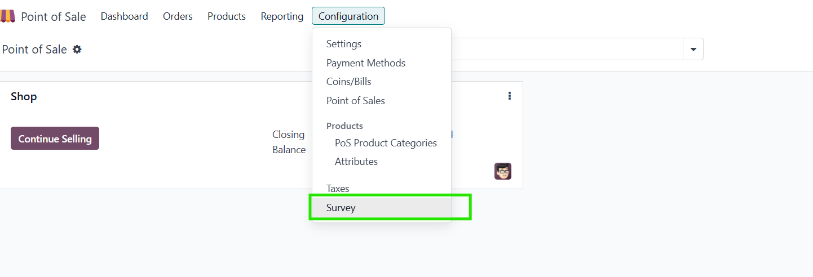
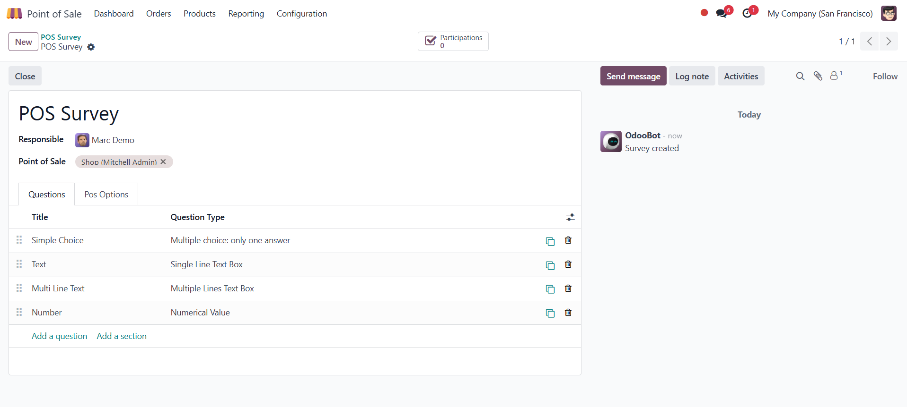
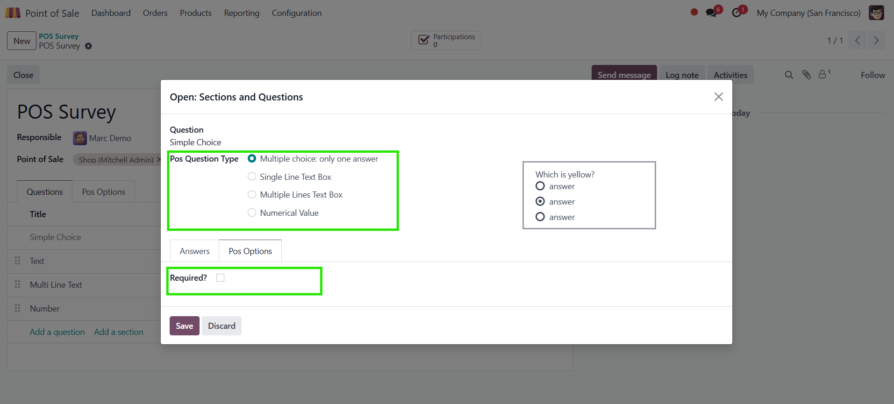
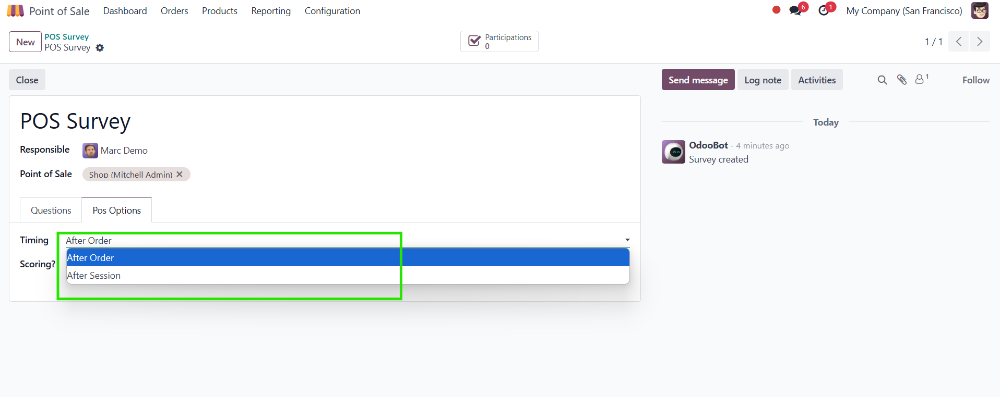
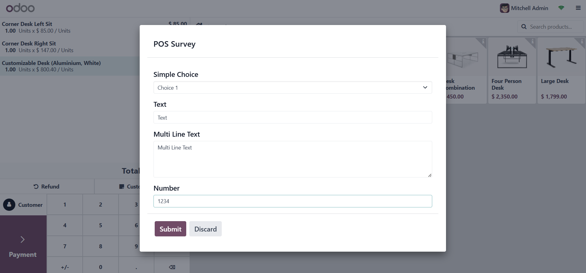
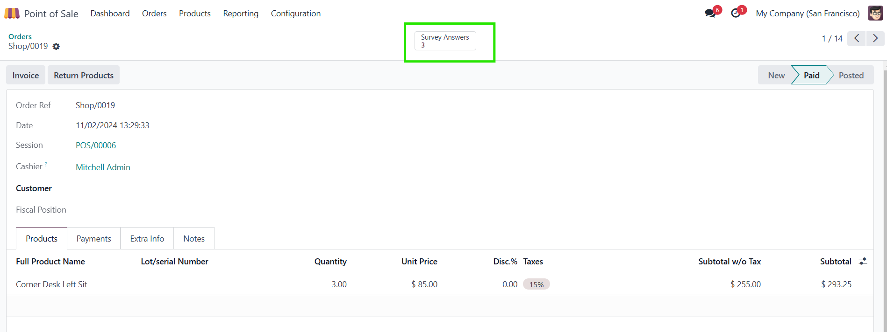
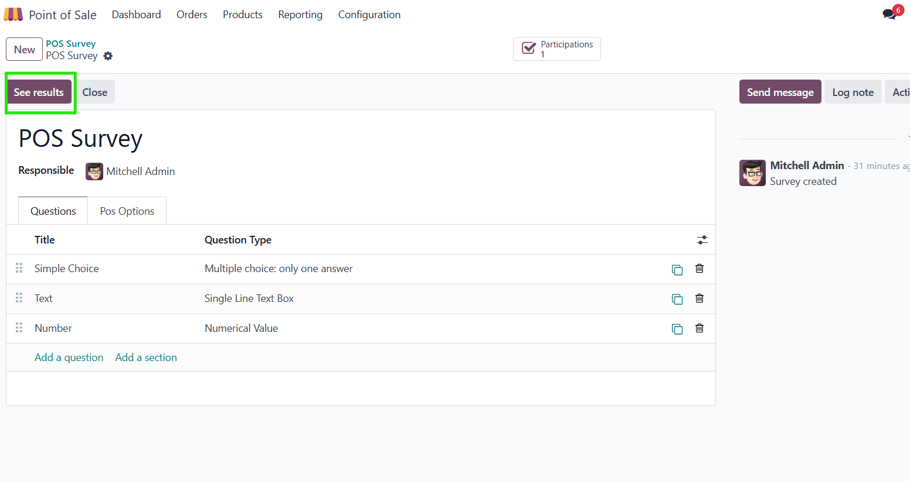

This module links the survey module to the point of sale
Navigate to survey menu in point of sale

Create a new survey and setup options
Enable scoring in the pos options tab

Supported question types include multichoice, single line text, multiline text and numerical Value
Set required field to force an answer

Set when the survey should be taken

In pos, the survey pops up with respect to the intended timing

In the backend, view answers for the survey from the order

Or navigate back to the survey and use Odoo's See Result function
